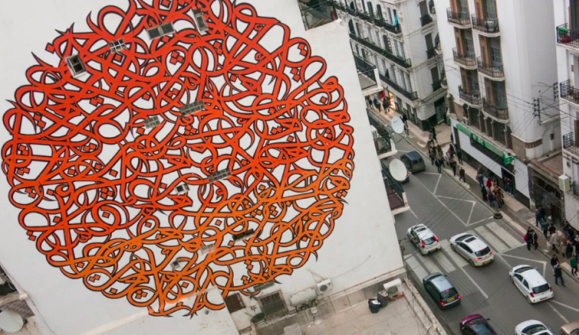
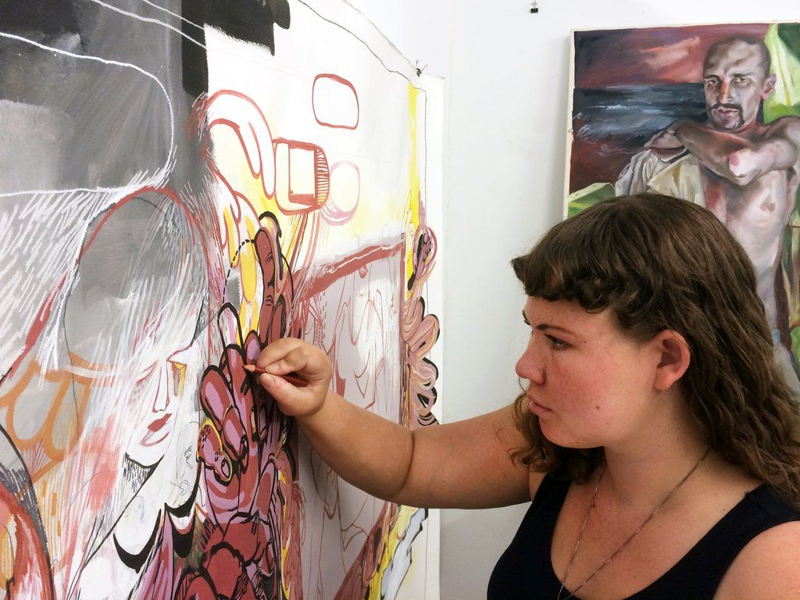
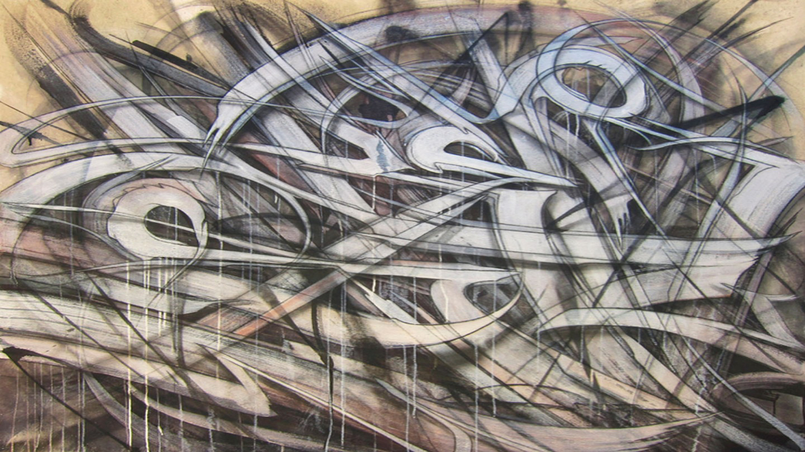
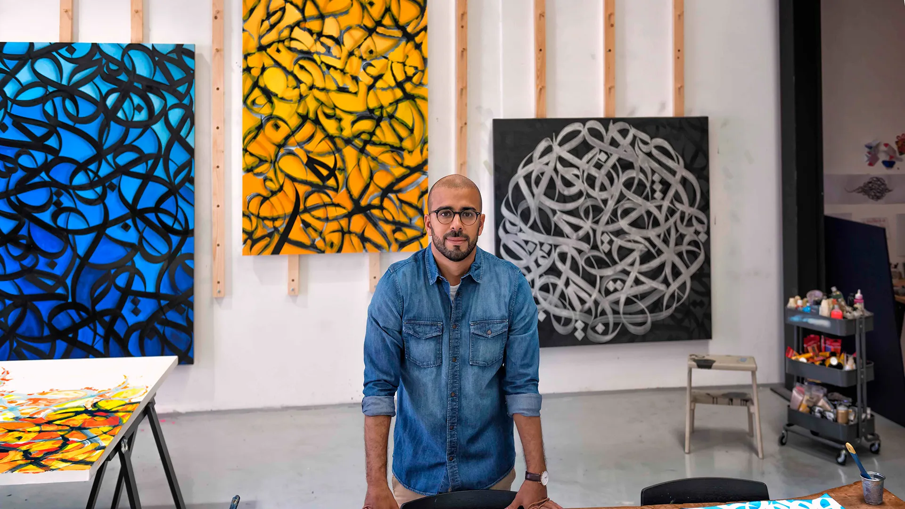
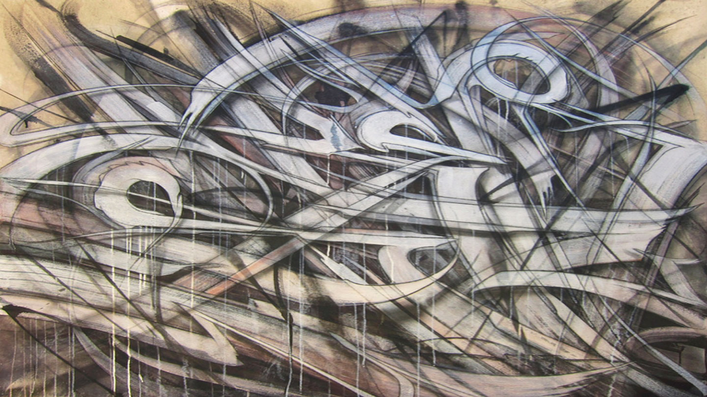
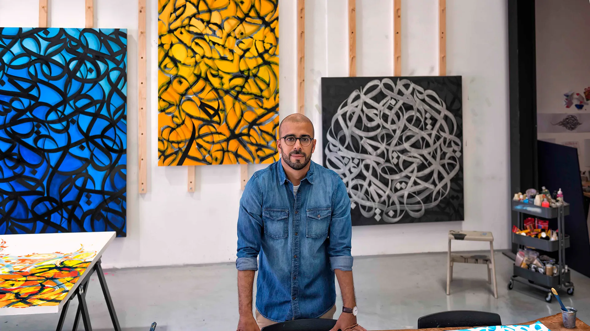

From graffiti to sculpture to fine art, this months artists are a diverse
group of individuals approaching art with new age takes and mediums.
Together as a group we can see politically and socially charged art created
by the young and old as their exhibitions, solo work and gallery shows shake
up the art world one piece at a time.
Editors favorites for this month include a highlight article on Graffiti Against
The System - GATS and a closer look at the iconic cell shading art style employed
by the team behind the hit game Borderlands 3.
Gats: Oakland Icon
Graffiti Against The System
also known as GATS is a Bay Area icon, known for his detailed character and
politically aware content.

French Tunisian Calligraphy El Seed
One of the most influential
new age calligraphy artists, El Seed is slowly becoming a household name
in the world of arab art.
American Feminist Artist: Judy Chicago
Judy Chicago is a feminist
icon in the world of education, books, and art. Her work explores the
implications and roles of women in culture and has been a steady figure for
over 4 decades.
Guston's Work More Relevant Than Ever
Philip Gustons pieces
commenting on race and the costant struggle within ourselves have once
again become relevant in the art world. Revisit his work and see how his
commentary through art applies our worlds current social climate.

Themes Tackling: Racial & Sexual Identities Gender & Queerness
Christina Quarels abstract and gesticulation
pieces confront important topics like indentity, gender and queerness. Her use of motion, color
and powerful messages make her art something to remember.
Donald Judd: MOMA NY
Donald Judd refused to be known
simply as a scultor. Even after his passing in 1994 his minimimalistic approach
to objects and their presentation is still on display and in the conversation at
some of the most world renowned galleries today.
LA Great SABER: New Releases
Legendary Los Angeles graffiti
figurehead SABER continues to put out colorful and interesting pieces with
socially aware undertones and an unmistakable style. Check out his newest
release on his website shop.saberone.com
Colorful, Powerful, Exploring West African History with Tunji Adeniyi-Jones
Tunji Adeniyi-Jones, the child of immagrant parents is
emerging as an important commentator on West African history through his awe striking pieces
filled with bold colors and powerful imagery.
The Gonz: American Skateboarder and Artist
Marc Gonzales is one of the most influential
skateboarders of all time and his transition to an established artist over the last
three decades has been something to keep on your radar. He is a creative anomaly and
his simplistic style is happy yet intriuging at the same time.
 


